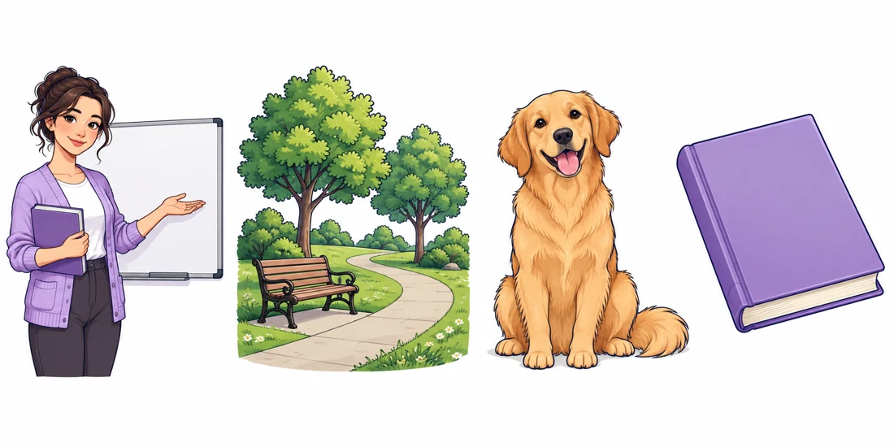

Lesson 01
NOUNS
Sustantivos: palabras que nombran.

Empieza aquí
¿Qué es un noun?
Identifica personas, lugares, animales y cosas. Aprende a distinguir el nombre de las palabras que lo describen.
- Video
- 10 preguntas
- Tu propio reto
Sin registro · Puedes repetir las actividades.